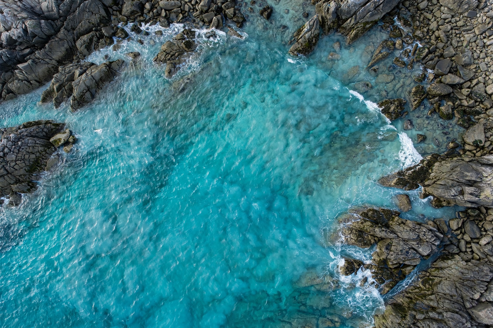

| Seawater | |
|---|---|
 | |
| Average salinity | ~35 g/kg (3.5%) |
| Major ions | Cl⁻ 55%, Na⁺ 30.6%, SO₄²⁻ 7.7%, Mg²⁺ 3.7% |
| pH | ~8.1 (surface, declining with acidification) |
| Density | ~1,020–1,029 kg/m³ |
Seawater, or salt water, is water from a sea or ocean. On average it has a salinity of about 3.5% — roughly 35 grams of dissolved salts per litre — though this varies from brackish estuaries to hypersaline lagoons. Seawater covers about 71% of Earth's surface and contains about 97% of the planet's water; it is undrinkable for humans without desalination.
Six ions make up over 99% of seawater's salts: chloride, sodium, sulfate, magnesium, calcium and potassium, in remarkably constant proportions worldwide (Marcet's principle), because the oceans mix over timescales shorter than the ions' residence times. Seawater also carries dissolved gases (oxygen, carbon dioxide), nutrients (nitrate, phosphate, silicate), trace elements and organic matter. Its salinity derives from rock weathering delivered by rivers and from hydrothermal exchange at mid-ocean ridges.
Seawater is denser than fresh water (about 1,025 kg/m³ at the surface) and freezes at about −1.8 °C. Salinity and temperature together control density and hence ocean circulation. Sound travels at roughly 1,500 m/s, varying with temperature and pressure — the basis of sonar and of the deep SOFAR channel. Electrical conductivity is high enough that seawater is the standard reference for salinity measurement via conductivity (practical salinity units).
Humans harvest sea salt by evaporation, use seawater for cooling and aquaculture, and increasingly desalinate it for drinking water. Concerns include ocean acidification — absorbed CO₂ has lowered surface pH by about 0.1 units since pre-industrial times — pollution, and the ecological monitoring of marine life summarised in indicators such as the Living Planet Index. Drinking seawater accelerates dehydration because the kidneys cannot excrete its full salt load without losing more water than was gained.
See also: Desalination · Living Planet Index · Charcoal